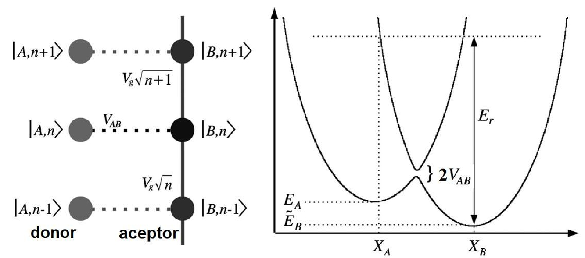

Polaron formation, Franck–Condon physics and vibronic transmission.
Consider the two-state donor-acceptor model discussed in class, where the acceptor is coupled to a phonon mode of frequency ω₀ with energy \( \hbar \omega_0 (n + \frac{1}{2}) \).
Use the displaced harmonic oscillator solution to discuss:
Reference: Marder, Sec. 22.4.5
Discuss the kinetic rate constant:
\[ k = \frac{1}{\tau} \]using Fermi's Golden Rule for donor-to-acceptor transfer. Compare with the Landau-Zener tunneling approach used by Marcus.
Reference: Cattena, Bustos-Marún, Pastawski (2010)
We consider two localized electronic states: donor \( \ket{A} \) and acceptor \( \ket{B} \) as can be seen in the image bellow.

The acceptor is coupled to a local phonon mode of frequency \( \omega_0 \). We explicitly set tunneling to zero:
\[ V_{AB} = 0 \]The Hamiltonian is:
\[ H = \varepsilon_A \ket{A}\bra{A} + \varepsilon_B \ket{B}\bra{B} + \hbar\omega_0 \left(\hat{b}^\dagger \hat{b} + \frac{1}{2}\right) + V_g \ket{B}\bra{B}(\hat{b} + \hat{b}^\dagger) \]Only the acceptor state couples to the oscillator. Therefore the problem separates into two independent sectors: donor and aceptor.
If the electron is on the donor, the phonon is unaffected:
\[ H_A = \varepsilon_D + \hbar\omega_0 \left(\hat{b}^\dagger \hat{b} + \frac{1}{2}\right) \]The eigenenergies are simply:
\[ E_{A,n} = \varepsilon_A + \hbar\omega_0 \left(n + \frac{1}{2}\right) \]When the electron occupies the acceptor:
\[ H_B = \varepsilon_B + \hbar\omega_0 \left(\hat{b}^\dagger \hat{b} + \frac{1}{2}\right) + V_g (\hat{b} + \hat{b}^\dagger) \]This is a harmonic oscillator with a linear term. The latter may be eliminated by completing the square.
This lowering of energy can be thought of as a binding energy.
Additionally, the oscillator equilibrium position shifts by: \[ x_0 = -\frac{V_g}{\omega_0^2} \] Finally, the exact eigenenergies are: \[ E_{B,n} = \varepsilon_B - \frac{V_g^2}{\hbar\omega_0} + \hbar\omega_0 \left(n + \frac{1}{2}\right) \]Physically: when the electron occupies the acceptor, nearby ions relax to a new equilibrium configuration.
Optical transitions occur vertically in configuration space (ions cannot move during the transition). The transition probability is proportional to the overlap:
\[ \left| \bra{A,n}H_T\ket{B,m} \right|^2 = |V_{AB}|^2 | \braket{\phi_n^{(A)}|\phi_m^{(B)}} |^2 \]Where \( \phi_n^{(A)} \) and \( \phi_m^{(B)} \) are the eigenfunctions of the donor and aceptor states respectively.
We may calculate the exact value by considering the particular transition from the groundstate of the donor to an excited state in the aceptor: \( \braket{\phi_0^{(A)}|\phi_m^{(B)}} \). This may be done via direct evaluation of the overlap integrals between the harmonic oscillator eigenfunctions. Alternatively, it may be done with the aid of the Displacement Operator.We start with the acceptor Hamiltonian
\[ H_B = \varepsilon_B + \hbar\omega_0 \hat{b}^\dagger \hat{b} + V_g (\hat{b}^\dagger + \hat{b}) + \frac{\hbar\omega_0}{2} \]To eliminate the linear coupling term \( V_g(\hat{b}^\dagger + \hat{b}) \), we apply a unitary transformation \( U \). We define the displacement operator:
\[ U = \exp\left[ g(\hat{b}^\dagger - \hat{b}) \right] \]where \( g \) is a real constant we need to determine. Using the identity \( U^\dagger \hat{b} U = \hat{b} - g \) and \( U^\dagger \hat{b}^\dagger U = \hat{b}^\dagger - g \), we apply this transformation to the Hamiltonian:
\[ \begin{align*} \tilde{H}_B &= U^\dagger H_B U \\ &= \varepsilon_B + \hbar\omega_0 (\hat{b}^\dagger - g)(\hat{b} - g) + V_g (\hat{b}^\dagger - g + \hat{b} - g) + \frac{\hbar\omega_0}{2} \\ &= \varepsilon_B + \hbar\omega_0 \hat{b}^\dagger \hat{b} - (\hbar\omega_0 g - V_g)(\hat{b}^\dagger + \hat{b}) + \hbar\omega_0 g^2 - 2V_g g + \frac{\hbar\omega_0}{2} \end{align*} \]To make the linear terms disappear, we force the coefficient of \( (\hat{b}^\dagger + \hat{b}) \) to be zero:
\[ \hbar\omega_0 g - V_g = 0 \implies g = \frac{V_g}{\hbar\omega_0} \]Substituting \( g \) back into the transformed Hamiltonian, we get:
\[ \tilde{H}_B = \varepsilon_B - \frac{V_g^2}{\hbar\omega_0} + \hbar\omega_0 \hat{b}^\dagger \hat{b} + \frac{\hbar\omega_0}{2} \]The eigenstates of this transformed Hamiltonian are simply the standard Fock states \( \ket{n} \). Therefore, the exact eigenstates of the original coupled Hamiltonian \( H_B \) are the displaced number states:
\[ \ket{\tilde{n}}_B = U \ket{n} \]The overlap between the unshifted donor vacuum and the shifted acceptor \( n \)-th state then is:
\[ \braket{0|\tilde{n}} = \bra{0} U \ket{n} \]To compute this, we take the Hermitian adjoint of the overlap \( \bra{n} U^\dagger \ket{0} \), where \( U^\dagger = \exp[-g(\hat{b}^\dagger - \hat{b})] \). We can split the exponential using the Baker-Campbell-Hausdorff (BCH) formula (specifically the Glauber identity \( e^{X+Y} = e^X e^Y e^{-[X,Y]/2} \)):
\[ U^\dagger = e^{-g \hat{b}^\dagger} e^{g \hat{b}} e^{-g^2/2} \]Applying this to the vacuum state \( \ket{0} \):
\[ U^\dagger \ket{0} = e^{-g^2/2} e^{-g \hat{b}^\dagger} \underbrace{e^{g \hat{b}} \ket{0}}_{= \ket{0}} = e^{-g^2/2} e^{-g \hat{b}^\dagger} \ket{0} \]Now, expanding the exponential operator \( e^{-g \hat{b}^\dagger} \) as a Taylor series:
\[ U^\dagger \ket{0} = e^{-g^2/2} \sum_{k=0}^{\infty} \frac{(-g)^k}{k!} (\hat{b}^\dagger)^k \ket{0} \]Since \( (\hat{b}^\dagger)^k \ket{0} = \sqrt{k!} \ket{k} \), the state is a coherent state:
\[ U^\dagger \ket{0} = e^{-g^2/2} \sum_{k=0}^{\infty} \frac{(-g)^k}{\sqrt{k!}} \ket{k} \]The overlap amplitude with the \( n \)-th state is simply the coefficient of \( \ket{n} \) in this expansion:
\[ \bra{n} U^\dagger \ket{0} = e^{-g^2/2} \frac{(-g)^n}{\sqrt{n!}} \]The Franck-Condon factor \( F_{0 \to n} \) is the square modulus of the transition amplitude:
\[ F_{0 \to n} = \left| \bra{n} U^\dagger \ket{0} \right|^2 = e^{-g^2} \frac{g^{2n}}{n!} \]Finally, we may bustitute \( g^2 \) to arrive at the Poisson distribution:
The energy difference between absorption and emission equals the relaxation energy \( \frac{V_g^2}{\hbar\omega_0} \).
In absence of tunneling:
This is the microscopic origin of the reorganization energy that appears later in Marcus–Hush electron transfer and in DBRTD transport.
We now restore a weak tunneling coupling between donor \(A\) and acceptor \(B\):
\[ H_T = V_{AB} \ket{A}\bra{B} + V_{AB}^* \ket{B}\bra{A} \]We assume:
The transfer rate is obtained using Fermi's Golden Rule:
\[ k = \frac{2\pi}{\hbar} \sum_f \left| \langle f | H_T | i \rangle \right|^2 \delta(E_f - E_i) \] In our case, the initial state is \( \ket{i} = \ket{A, n} \) and the final state is \( \ket{f} = \ket{B, m} \).Because the oscillator is displaced when the electron is on \(B\), the phonon wavefunctions are shifted. Therefore:
\[ \bra{B, m} H_T \ket{A, n} = V_{AB}^* \braket{\phi_m(x + x_0) | \phi_n(x)} \]These overlaps generate the Franck–Condon factors.
The Golden Rule becomes: \[ k = \frac{2\pi}{\hbar} |V_{AB}|^2 \sum_{n,m} P_n \left| \langle \phi_m(x+x_0) | \phi_n(x) \rangle \right|^2 \delta(E_{B,m} - E_{A,n}) \] where:We now extend the model to a DBRTD where a single resonant level \( \varepsilon_0 \) is coupled to:
As in part (a), the electron–phonon coupling produces a polaron shift:
\[ \Lambda = \frac{V_g^2}{\hbar\omega_0} \] so that the renormalized resonant energy is: \[ \varepsilon_0 \rightarrow \varepsilon_0 - \Lambda \] We eliminate the linear phonon term in the Hamiltonian in a similar manner as was done for part a). We define the unitary transformation generator based on the electron occupation of the central dot \( \hat{n}_0 = \hat{c}_0^\dagger \hat{c}_0 \): \[ U = \exp\left[ \frac{V_g}{\hbar\omega_0} \hat{n}_0 (\hat{b}^\dagger - \hat{b}) \right] \]So, the unitary operator is \( U = e^S \) and its adjoint is \( U^\dagger = e^{-S} \). To evaluate \( e^{-S} \hat{b} e^S \), we use the Hadamard Lemma (a specific form of the Baker-Campbell-Hausdorff formula):
\[ e^{-S} \hat{b} e^S = \hat{b} + [-S, \hat{b}] + \frac{1}{2!} [-S, [-S, \hat{b}]] + \dots \]First, we calculate the commutator \( [-S, \hat{b}] \):
\[ [-S, \hat{b}] = -g \hat{n}_0 [\hat{b}^\dagger - \hat{b}, \hat{b}] \]Since \( [\hat{b}, \hat{b}] = 0 \) and the standard bosonic commutation relation is \( [\hat{b}^\dagger, \hat{b}] = -1 \), we get:
\[ [-S, \hat{b}] = -g \hat{n}_0 (-1) = +g \hat{n}_0 \]Now, we check the next term in the series, \( [-S, +g \hat{n}_0] \). Because \( \hat{n}_0 \) commutes with itself (\( [\hat{n}_0, \hat{n}_0] = 0 \)), this term is exactly zero. The infinite series truncates immediately!
The transformed phonon operators are simply:
\[ \begin{align} U^\dagger \hat{b} U &= \hat{b} + g \hat{n}_0 \\ U^\dagger \hat{b}^\dagger U &= \hat{b}^\dagger + g \hat{n}_0 \end{align} \] Substituting back \( g = \frac{V_g}{\hbar\omega_0} \):Now we substitute these dressed operators into the Hamiltonian.
Since \( U \) is a function of \( \hat{n}_0 \), they trivially commute: \( [\hat{n}_0, U] = 0 \), meaning \( \hat{n}_0 \) is invariant under the transformation. The resulting electronic contribution is simply:
Since electrons are fermions, \( \hat{n}_0^2 = \hat{n}_0 \) (the dot can only hold 0 or 1 electron). Grouping terms gives:
Now, we add the transformed parts together:
\[ \tilde{H}_S = \tilde{H}_{el} + \tilde{H}_{ph} + \tilde{H}_{el-ph} \] Looking at the terms linear in \( (\hat{b} + \hat{b}^\dagger) \): \[ \left( \hbar\omega_0 g - V_g \right) \hat{n}_0 (\hat{b} + \hat{b}^\dagger) \]Remembering that we defined \( g = V_g / \hbar\omega_0 \), the coefficient \( \hbar\omega_0 g - V_g = 0 \). The linear electron-phonon coupling is exactly cancelled!
Finally, we collect the remaining terms proportional to \( \hat{n}_0 \): \[ (\hbar\omega_0 g^2 - 2V_g g)\hat{n}_0 \] Substituting \( g = V_g / \hbar\omega_0 \): \[ \hbar\omega_0 \left(\frac{V_g}{\hbar\omega_0}\right)^2 - 2V_g \left(\frac{V_g}{\hbar\omega_0}\right) = \frac{V_g^2}{\hbar\omega_0} - \frac{2V_g^2}{\hbar\omega_0} = -\frac{V_g^2}{\hbar\omega_0} \] This leaves us exactly with the polaron reorganization energy, \( -\Lambda \). Therefore, the final diagonalized internal Hamiltonian is:Now, we need to calculate the exact probability amplitude for an electron to tunnel onto the dot and change the phonon bath from an initial state \( n \) to a final state \( m \). Using the fundamental definition of the resolvent (Green's function):
\[ G = \left( E - H_{eff} \right)^{-1} \] we may derive the Green's function in a couple of ways.Because \( H_{eff} \) contains the off-diagonal coupling \( -V_g \hat{n}_0 (\hat{b} + \hat{b}^\dagger) \), directly inverting the matrix \( (E - H_{eff}) \) is mathematically nightmarish. Instead, we use the diagonal (polaron) basis. Since \( U \) is a unitary matrix, it passes smoothly into the denominator, transforming the Hamiltonian exactly as we derived earlier:
\[ U^\dagger \frac{1}{E - H_{eff}} U = \frac{1}{E - U^\dagger H_{eff} U} = \frac{1}{E - \tilde{H}_{eff}} \] Then, an element of the Green's function is: \[ G_{mn}(E) = \bra{1, m} U \frac{1}{E - \tilde{H}_{eff}} U^\dagger \ket{1, n} \]Now we evaluate how \( U^\dagger \) acts on the bare state on the right. Since the state contains 1 electron (\( \hat{n}_0 = 1 \)), the operator \( U^\dagger \) acts entirely on the phonon subspace as the displacement operator \( \hat{X}^\dagger \):
\[ U^\dagger | 1, n \rangle = \exp[-g(1)(\hat{b}^\dagger - \hat{b})] | 1, n \rangle = | 1 \rangle \otimes \hat{X}^\dagger | n \rangle \]Similarly, acting to the left on the bra:
\[ \langle 1, m | U = \langle 1 | \otimes \langle m | \hat{X} \]Substituting these back into our matrix element, the electron part factors out (since the dot is occupied), leaving an equation purely in the phonon subspace:
\[ G_{mn}(E) = \bra{m} \hat{X} \left( \frac{1}{E - \tilde{\varepsilon}_0 - \hbar\omega_0 \hat{b}^\dagger \hat{b} - \Sigma(E)} \right) \hat{X}^\dagger \ket{n} \]Because the denominator is now perfectly diagonal in the phonon number operator \( \hat{b}^\dagger \hat{b} \), we can easily evaluate it by inserting a complete set of intermediate phonon states, \( \sum_k \ket{k}\bra{k} = I \):
The transition probability from any initial state \(n\) to any final state \(m\) requires evaluating the generalized Franck-Condon overlap \( F_{n\to m} = |\langle m | \hat{X} | n \rangle|^2 \). For the displaced harmonic oscillator, this evaluates analytically to:
\[ F_{n\to m} = \left| \bra{m} \hat{X} \ket{n} \right|^2 = e^{-S} \frac{n!}{m!} S^{(m-n)} \left[ L_n^{(m-n)}(S) \right]^2 \]where \( S = g^2 = (V_g/\hbar\omega_0)^2 \) and \( L_n^{(m-n)} \) are the associated Laguerre polynomials. If we assume the Zero Temperature limit (\(n=0\)), this immediately collapses back to the standard Poisson distribution \( F_{0\to m} = e^{-S} S^m / m! \).
Alternatively, the Hamiltonian can be mapped onto a 1D semi-infinite tight-binding chain where each "site" represents a phonon number \( k \). The coupling between site \( k \) and \( k+1 \) is the off-diagonal interaction \( V_g\sqrt{k+1} \). The Green's function is then found by "decimating" the higher-order sites into a continued fraction:
\[ G_{00}(E) = \frac{1}{E - \varepsilon_0 - \Sigma_{leads} - \Sigma_{ph}(E)} \]Where the phonon self-energy is:
\[ \Sigma_{ph}(E) = \frac{V_g^2}{E - (\varepsilon_0 + \hbar\omega_0) - \Sigma_{leads} - \frac{2V_g^2}{E - (\varepsilon_0 + 2\hbar\omega_0) - \Sigma_{leads} - \dots}} \]The total transmission is the sum of all inelastic channels where the electron leaves the dot having exchanged energy with the phonon mode:
\[ T_{tot} = \sum_m T_{n \rightarrow m} \] We already know the form of each individual transmission: \[ T_{n \to m}(E) = 4\Gamma_L(E) \Gamma_R(E_{out}) |G_{mn}(E)|^2 \] So the total transmitance can be obtained numerically after sufficient convergence.